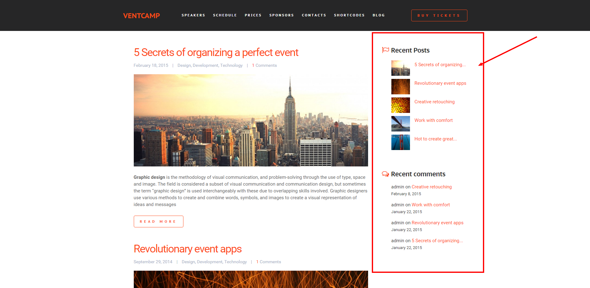

VentcampWP Documentation
Ventcamp is highly functional WordPress Theme for events and conferences.
Ventcamp has everything you need to get a website and start selling tickets in 1-2-3 bundled and perfectly tuned up to work together. Create any layout you need, capture forms data or setup full-blown eCommerce with WooCommerce – everything is possible wit!
Installation
Package structure
After downloading the complete theme package from Themeforest (All files & Documentation) and unzipping it you should have the following files & folders:
package/Demodata/package/Documentation/package/Licensing/package/PSD/package/ventcamp.zipmain file to install the themepackage/ventcamp-child.zip
Installing via FTP
To install theme via FTP please follow these steps
- Unzip
theme/ventcamp.zipmain theme file anywhere on your computer - Login to your website hosting via FTP client
- Navigate to your WordPress themes
/wp-content/themes/directory - Upload the extracted
ventcampfolder directly to the/wp-content/themes/folder
Installing via WordPress
To install theme via WordPress Admin Dashboard please follow these steps:
- Login to your wordpress dashboard, go to WordPress Appearance > Themes section
- Click on Install Themes tab
- Click on Choose File button, and select main theme ventcamp
.zipfile and click Install Now button.
This is the most convenient method but unfortunately doesn’t work on some web hosts due to their settings
{kind=link}
Activating theme
After uploading the theme, you must activate it. Navigate to the Appearence > Themes page, locate ventcamp theme and activate it!
{kind=link}
Demo Data
1-click import
Your Ventcamp theme is a complete copy of our demo but you have to import demo data first before it becomes the same. Theme has very useful 1 click install option so you don’t have to worry about setting up your theme copy, it will be done automatically in less then 5 minutes!
- Click Settings > Demo data section on the left from admin dashboard
- Click Import button
- Please wait until page finishes loading completely… DONE!
{kind=link}
Setting WP menu
Normally if you use 1-click demo install the menus are assigned to their corresponding places, but in some cases they are not thus they don’t appear on the homepage and have to be set manually.
Ventcamp supports 2 menu locations for normal WordPress menus:
- Main (left menu): used for internal HOME, ABOUT, SERVICES, CONTACTS etc. links for scrolling navigation on homepage but external links can be added too of course
- Extra (right menu) : used for LOGIN/SIGNUP, this menu is replaced by user account data when user is logged in
- Step 1 – Navigate to the Appearance > Menus page.
- Step 2 – Select the menu location you would like to edit in Select a menu to edit box
- Step 3 – Name the new menu
- Step 4 – Add menu items normally from the sidebar on the left.
{kind=link}
{kind=link}
{kind=link}
{kind=link}
Usually for a one-page homepage you would need to add a simple “Link” element that has your linking section ID (that you have assigned in Visual Composer Page Builder for Row) for the URL input box (e.g. “http://your-website.com#team“) if you would like the menu to scroll down to “OUR TEAM” section.
If you don’t put website URL before the anchor tag – the menu won’t be working on internal pages. All other link types (external/wp pages/wp categories/etc are also working here of course)
Widgets
Theme widgets
Ventcamp has several widget zones, these are:
- Blog sidebar (right) 
- Footer widgets
{kind=link}
{kind=link}
Both zones are controller through default Appearance -> Widgets
{kind=link}
Ventcamp also has 3 custom widgets and it is advised to use those but you can also use the default WP ones although they will remain unstyled
{kind=link}
Forms
Fast Signup & Leadgen
Generally these forms just send emails to the specified addressed on submit and save the submission data for later use, so the main purpose of them is to prospect users interest in your product and connect with them later on, just that.
{kind=link}
Any of them can be used as a plain contact form easily, all forms are super responsive too!
Currently our demo data has these pre-set forms:
Fast signup – 3 horizontal and 2 vertically aligned forms for fast user signups. Usually used to gather new users subscriptions or waiting lists fast and then work with them through email. Waiting lists, beta lists, pre-launch campaign, general interest of not yet launched startup this is what these forms are usually used
Lead generation– 3 big and bold forms for more detailed user data collection. Usually used for new services ordering, callback requests, quote estimations, etc.
Contact – 1 clear inline form to fit any place in your theme or widget zone that collects users feedback
There are also Login/Registrations form in the theme built-in but they are different, and we will cover them in the “WP Login/registration forms” section
Adding form on page
All forms can be added in any part of the page and are managed with our “Form Manager” shortcode, just add it on a page:
{kind=link}
then choose which form to use and edit it’s settings (these are per-form so you can have multiple forms on a page with different settings)
{kind=link}
Currently with our Form Manager you can:
- Choose which form to render
- Show/Hide form on submit
- Redirect to any url on submit
- Integrate it with Mailchimp (and choose wether or not to use Double Opt-in option)
- … more options and API support are coming up soon!
Forms submission data
All form submissions are saved automatically by default, it also takes all available form fields on submit, so no need to do additional setup for each form for this to work. After saving you can export the data in any format you like (csv/xml/html/etc..) or display it with a shortcode anywhere on a website
cfdbplugin.com– official website
Note: while we are using this plugin to save form submissions it’s default title “Contact Form DB” in WordPress dashboard is changed to “Forms Data” in our theme. This is done to make things more comprehensive for starters.
Page Templates
WP page layouts
The theme currently has several page templates available:
- Fullwidth– 100% fullwidth main template
- Fullwidth, no footer– 100% fullwidth main template without footer
- Boxed, no sidebar – boxed page template without sidebar
- Boxed, sidebar right – boxed page template with right sidebar
- Boxed, sidebar left – boxed page with template left sidebar
- User login & control panel – this page template is used solely for user control panel with login, and it shows contents of /admin/index.php file after successful login where normally your startup dashboard should reside. Inside this directory you can add any PHP files and libraries or make completely separate site if needed.
- User registration – this is used for registering users inside WordPress using default functions and Ventcamp styled form
{kind=link}
Normally you would want to use Fullwidth page template most of the time for main pages since it allows fullwidth sections with Row shortcode but you also can use Row -> Stretch setting to add boxed content inside fullwidth layout. Boxed layouts are commonly used for inner pages
{kind=link}
Blog page
Blog page is a page where WordPress displays all posts (It should be set in Settings > Reading though if it’s not), currently it’s design can be controlled by several settings, see Theme Options > Blog section of this guide
Plugins
Visual Composer
Ventcamp uses Visual Composer plugin to handle content creation, this is most common structure and a standard in WordPress theme development nowadays that is quickly expanding, almost 95% of all new themes at Themeforest are now using it, so we highly recommend you to take some time to learn the basics to unleash the full power of this awesome plugin. After you learn how to use it – new page creation will be very easy and fast for you
{kind=link}
the best places to start is:
- Guide to Drag&Drop Page Building – from wpexplorer.com
- Video Academy tutorials – from the original authors
- WPBakery blog – official blog
Envato WordPress Toolkit
This toolkit is used for easier automatic theme updates and backup. We have decided to move it under our theme options to save dashboard space and general aesthetics (you win’t use it that often anyway). whenever the theme is updated just navigate to this plugin, follow the onscreen instructions to set it up and then just hit “Save settings”, after they are verified and saved you can proceed to “Themes” tab and choose the update to install
Forms (Contact Form 7 )
Ventcamp uses Contact 7 plugin that we renamed to “Forms” in admin dashboard to manage forms, so once you have installed the theme and activated all needed plugins for it just head over to “Forms” section in admin dashboard and add as many forms as you like. This plugin controls only several forms that are placed as website content
{kind=link}
All forms come with pre-configured settings and messages with theme demo data, so you can easily get a grip on what to change where
{kind=link}
While you can change the forms anyway you like there are 2 field names that are reserved by Ventcamp theme:
FULLNAME – upon submit this value is processed by a function to parse out users First name and Last name
EMAIL – user email, always a required field
FNAME – user First name, optional
LNAME – user Last name, optional
if you see those in form contents – please do not change this tags, otherwise the theme won’t know how to distinguish the fields for API calls
Note: while we are using this plugin to create new forms it’s default title “Contact 7” in WordPress dashboard is changed to “Forms” in our theme. This is done since we use some additional extensions to the default plugin that pushes it beyond simple contact form making to something bigger, and the new name also makes it more comprehensive for starters.
Contact form 7 Quick Start – official guide
Forms Data (Contact Form DB)
This is a custom extension for “Contact 7” plugin that allows to save any form with any fields to the website database upon successful submit along with service data like IP and date. All form submissions are saved automatically by default, it also takes all available form fields on submit, so no need to do additional setup for each form for this to work. After saving you can export the data in any format you like (csv/xml/html/etc..) or display it with a shortcode anywhere on a website
cfdbplugin.com– official website
Note: while we are using this plugin to save form submissions it’s default title “Contact Form DB” in WordPress dashboard is changed to “Forms Data” in our theme. This is done to make things more comprehensive for starters.
Icons
LineIcons
Icon class reference lists/cheat sheets are as follows
- Line Icons – http://www.startuplywp.com/line-icons.html
These icons are the most widely used sets and cover almost all aspects of activities you might need to represent with them
FontAwesome
Icon class reference lists/cheat sheets are as follows
- FontAwesome v4.3.0 – http://fontawesome.io/icons/
These icons are the most widely used sets and cover almost all aspects of activities you might need to represent with them
The End
Sources & Credits
Scripts, graphics, fonts and other files used in the theme:
- jQuery PrettyPhoto – http://www.no-margin-for-errors.com/projects/prettyphoto-jquery-lightbox-clone/ Modernizr – http://modernizr.com/
- Font Awesome – http://fontawesome.github.com/Font-Awesome/
- Google Fonts – http://www.google.com/webfonts
That’s all for now, since we moved the docs to online we are going to update it real time with more videos and screenshots to make it as comprehensive as possible.
Thanks for your purchase and hope you enjoy Ventcamp WordPress Theme!